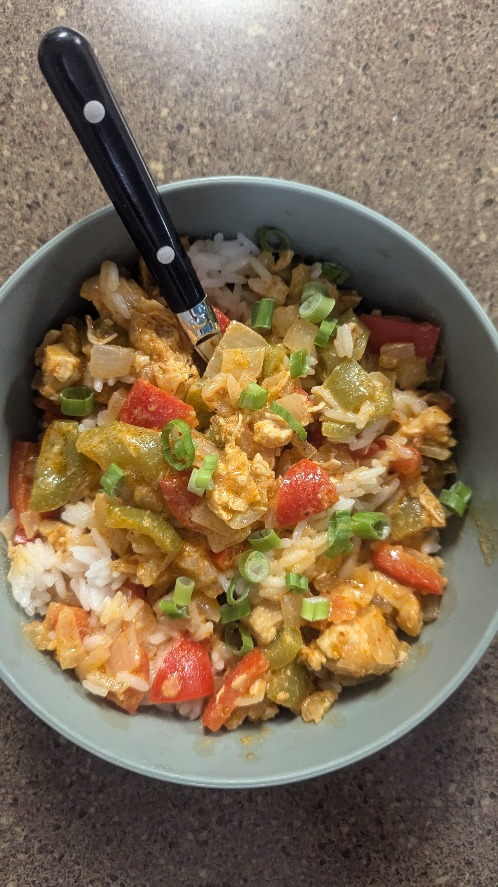
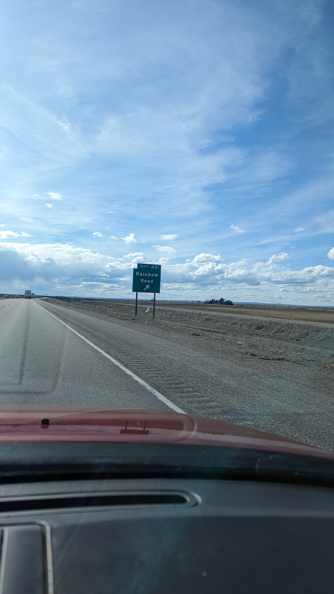

This is a journal taking page where key jurnal inquires which I want to show to the world.
For me, journal and note-making have become invaluable practices that enhance my learning, creativity, and personal growth. Keeping a journal allows me to reflect on my thoughts and emotions, document daily experiences, and track my personal development over time. It's a way for me to process what’s happening in my life and gain insights into my own patterns and behaviors. Note-making, on the other hand, helps me organize and retain information, whether it’s for college, work, or personal projects. I’ve found that summarizing key points, creating mind maps, and using bullet points greatly improve my understanding and recall. These practices encourage me to stay mindful, boost my productivity, and serve as a repository of ideas and knowledge that I can revisit and build upon. All inquires below are general information from my personal journal.
Wed, Jun 26, 2024
This is just some food that I cooked up yesterday, I'm quite happy with the results. The food is called Coconut Curry, the ingredients used is: Coconut Milk, Lime, Bell Peppers, Rice, Chicken, Spring Onion, Onion, Ginger, Garlic, Curry Paste, Vegitable Oil.
Fri, Mar 29, 2024
Went to Boise to visit my grandmother and other family. While on the drive I found the sign which reminded me of Mario Cart.